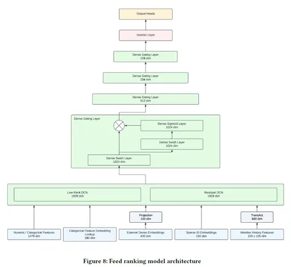

Продолжаем знакомить вас с оптимизациями, благодаря которым LinkedIn улучшили ключевые метрики своих рекомендательных систем.
Dense Gating и LMLP
Авторы статьи сделали MLP шире, и она стала работать лучше, а ещё — внедрили в архитектуру контроль над информацией с помощью Gate Net, который эффективнее всего оказалось применять к скрытым слоям. Сначала вход прогоняют через линейный слой с SiLU (swish) активацией. Затем выход умножают на выход, трансформированный линейным слоем с сигмоидой.
Incremental Training
Упоминают два подхода к инкрементальному дообучению. В классическом варианте, где новая модель обучается на весах старой, авторы столкнулись с катастрофическим забыванием. Поэтому решили добавить в дообучение регуляризационный терм. Для этого помимо весов предыдущей модели используется гессиан. Точнее, его диагональные элементы, которые аппроксимируются с помощью матрицы Фишера.
Чтобы ещё лучше обезопаситься от катастрофического забывания, в дополнение к весам из предыдущей модели авторы берут веса самой первой cold start-модели, комбинируя их, и здесь тоже используют гессиан.
Member History Modeling
Для моделирования истории пользователя используется транзакт, представленный командой Pinterest. В трансформере над историей эмбеддинги айтемов конкатенируются с эмбеддингами экшнов и эмбеддингом айтема, скорящегося в данный момент времени (early fusion). Из трансформера забирают макс-пуллинговый токен, а также 5 последних токенов — так же, как в транзакте.
Explore and Exploit
Чтобы разрешить дилемму explore/exploit, в последний слой добавляют байесовскую линейную регрессию. Оттуда получают веса и используют их в томпсоновском сэмплировании, чтобы предлагать кандидатов с учётом explore/exploit tradeoff. Подробнее схему не раскрывают, но указывают, что она помогла получить +0,6% активных юзеров на в тестах.
Это всё на сегодня! А в финальной части обзора обсудим ещё 4 интересные оптимизации.
@RecSysChannel
Разбор подготовил
